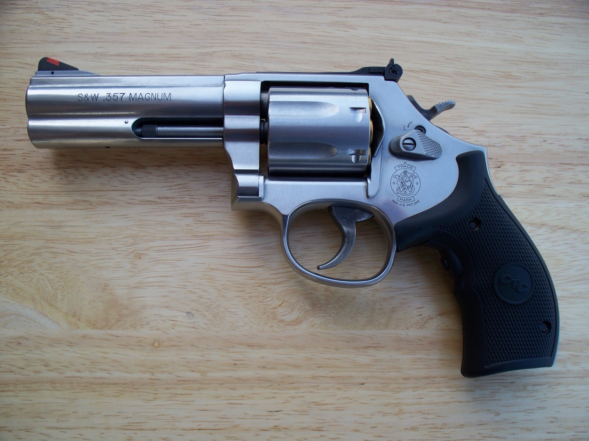
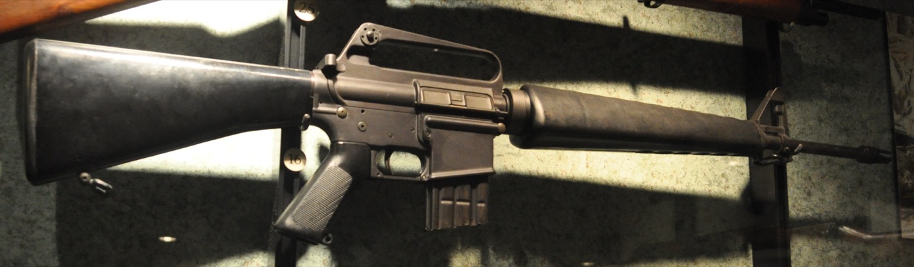
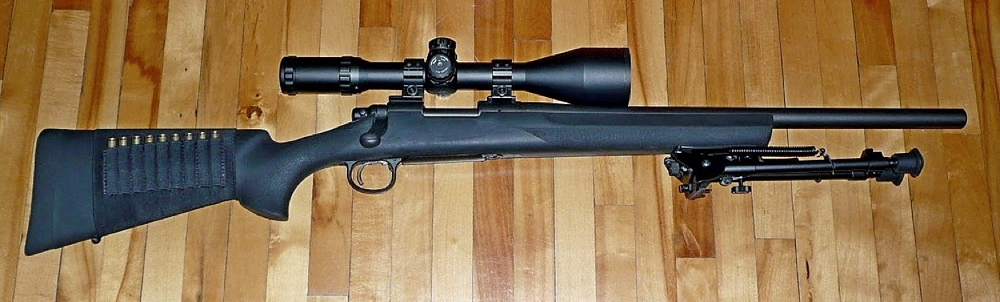
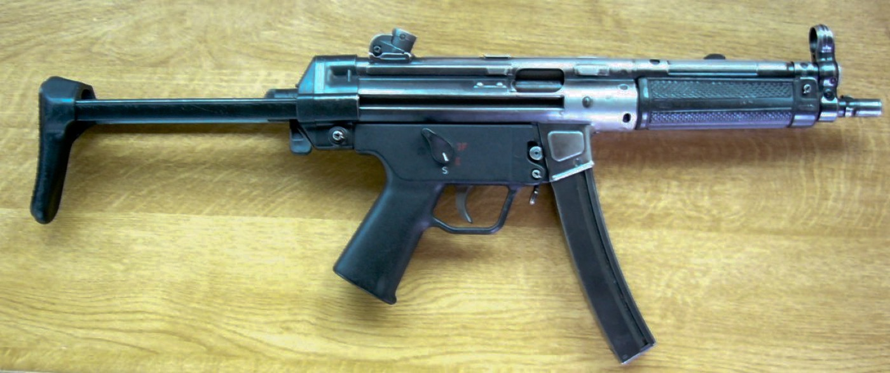
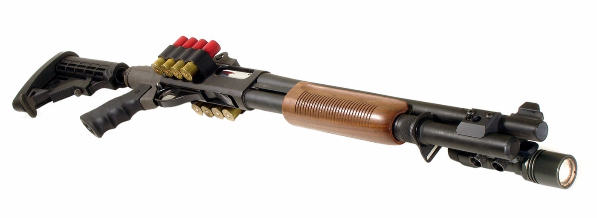
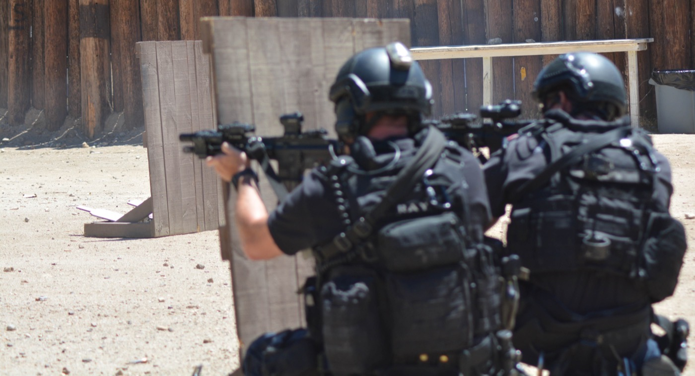
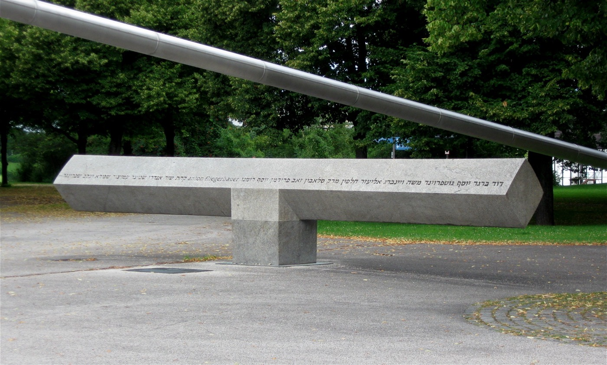
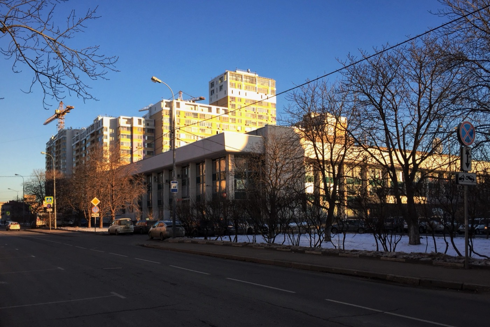
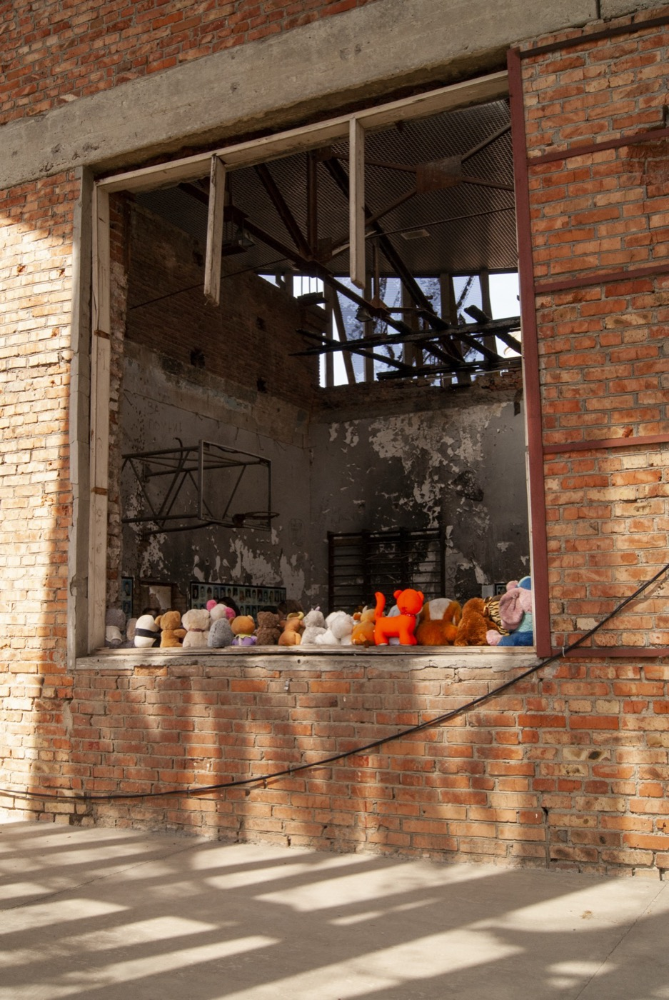

枪战场面在电影和剧集里从不缺席：《黑暗骑士》开场那场分工明确的银行劫案，被奉为影史最真实枪战场面之一的《盗火线》，《纸钞屋》里教授一伙人挟持人质、和警方隔门对峙的戏码，《豺狼的日子》里那位冷静到近乎优雅的职业狙击手，还有近几年动作片里几乎重新定义了"耍帅"标准的《极速追杀》系列——主角约翰·威克招牌式的贴身近战加连续精准点射，被影迷和媒体称作"gun-fu"。但这些画面看多了会露出一个共同的问题：它们都太干净了，干净到很难分清哪些是真实规律，哪些只是剪辑和配乐堆出来的幻觉。
两周前的一个下午，这个疑问有了第一手的答案——在美国一家枪店真正打了枪，格洛克的巨大声响和后坐力，跟电影里那种轻飘飘的"砰"完全不是一回事。这本书就从那半天讲起，往外扩展成三层：枪械本身怎么分类、精度和射速为什么互相矛盾；警察和特警在真实对峙里到底在怕什么、门后面躲不躲得住子弹；再到历史上几场真正改变了世界处理人质危机方式的恐怖袭击，以及中国、美国和其他国家对枪支这件事截然不同的态度。读完之后，回头再看这几部戏，应该能看出更多门道。
靶场那天
整个流程比想象中正规。进门先看一段安全指导视频，签一份责任协议书，然后在柜台前选枪、买子弹——工作人员根据"完全新手"的情况，推荐了两把入门配置：一把 .22 口径左轮，一把警察标配的 9mm 格洛克。戴上耳塞和护目镜，领十张纸靶，准备工作才算结束。走进射击区才发现，分到的 20 号和 21 号靶道旁边全是老手，大多用的是步枪，其中一位用的那把又长又粗、看起来像狙击枪的家伙，一开火整个大厅都在震。
为什么靶场的规矩比想象中多
安全指导视频和责任协议书不是走过场。几乎所有正规靶场都会反复强调同一套"枪支安全四原则"，这套原则最早由美国枪械教官杰夫·库珀系统化，后来成了全球射击训练的通用底线：把每一支枪都当作已装填的枪来对待，哪怕刚检查过弹膛是空的；枪口永远不指向任何不打算摧毁的东西，包括转身、递枪、放下枪的每一个瞬间；手指放在扳机护圈外面，直到真正准备击发的那一刻，而不是"看着像要开枪了"才移开；开枪前确认目标本身，以及目标后面挡着什么，因为子弹打穿目标之后不会凭空消失。这四条规则单独看都很朴素，但靶场里每一个动作——从工作人员示范换弹，到隔壁道岔老手放下枪去换靶——都在被这四条无声地约束着，这也是为什么一群素不相识的陌生人端着真枪站在同一排，现场秩序反而出奇地严格。
耳塞和护目镜也不是形式主义。一次射击的瞬间峰值声压能达到 140 到 170 分贝，而人耳在瞬时暴露超过 140 分贝时就可能造成不可逆的永久性听力损伤——这个阈值比摇滚演唱会前排（约 110-120 分贝）还要高出一大截，且枪声是脉冲式的尖峰声压，对耳蜗毛细胞的瞬间冲击比持续性噪音更具破坏性，防护耳塞/耳罩几乎是没有商量余地的标配。护目镜防的不是枪口那头的危险，而是近处的：半自动手枪抛壳时，滚烫的黄铜弹壳会以相当高的速度从抛壳口甩出，偶尔会弹跳到旁边射手的方向；此外，弹头击中金属靶架或坚硬物体后偶尔会产生细小碎屑飞溅，护目镜挡的正是这类近距离的意外风险，而不是子弹本身。
先上手的是格洛克。这个名字天天在新闻和电影里听到，感觉应该是最"基础"的那把枪，结果对新手来说反而是最吓人的——扳机扣下去的瞬间，枪口会不受控制地往上跳，声音大到超出预期，五发打完，基本谈不上"瞄准"这两个字，全靠现场工作人员从头带：怎么换弹匣、怎么用双手压住枪口的上跳、身体重心怎么摆。打完一整个弹匣就迫不及待把第一张靶纸摘了下来，原以为打枪都是这么吓人的。格洛克单手拿着有明显的分量感，换弹也不算轻松，好在它是半自动的——扣一次扳机，退壳、进膛、复位一步到位，不用像左轮那样一发一发手动装填。
换成左轮之后，体验完全是另一个量级：声音和后坐力都小了一大截，同行的家人也能顺利上手，又多打了两三个弹巢。左轮不会自动抛壳，扣一次扳机弹巢会自动转到下一个装填位，但打完之后，所有打过的空弹壳需要手动一颗一颗抠出来——这跟格洛克打完自动退壳、弹匣一扣就能继续的体验完全不同。

比后坐力更真实的，是那种被吓到的感觉
老实讲，打完格洛克那一下是真的被吓到了。切实体会到为什么人们会把黄铜子弹形容成"死神"，也第一次隐约感觉到，真正的战争会有多么残酷——很大一部分冲击其实来自声音，不是后坐力本身。后坐力单独拎出来其实还能接受，但巨大的爆响叠加上去，那种应激反应是身体层面的，不是"心理准备"能提前化解掉的。下次如果再去，大概会戴一副专业的降噪耳机，感受应该会不一样。
瞄准，比电影里难得多
比直观感受更有意思的是几个间接体会。第一个是瞄准的真实难度：手枪在 20 到 50 米开外，靶纸已经小到几乎看不清任何细节。以前看电影，警察端着手枪对着几十米外的目标却总打不中，会觉得是编剧偷懒或者角色能力不行；打过一次才明白，这其实是物理上的正常表现——手枪这个尺寸的准星和照门，在这个距离上本来就很难提供有效的瞄准精度。
第二个变化更持久：现在看枪战片，会不自觉地去观察角色的持枪姿势——到底是单纯摆酷的单手侧身，还是真的用双手在压制后坐力；会去想，为什么大多数枪战场面里角色要连续开好几枪才能命中，而不是电影惯用的"一枪一个"。答案其实很朴素：不管是手枪、步枪还是冲锋枪，几乎所有枪械在设计上都要在射击精度和别的东西（射速、后坐力控制、成本、重量）之间做取舍，人在实战瞄准时也做不到百发百中；真正能做到"瞄准即命中"的枪，只有狙击枪这一个特例——冷静、精确、一发解决问题，几乎是所有其他枪械的反面，这也是狙击枪常被认为是最"酷"的一类枪械的原因。这个问题，下一章会专门展开讲。
这次体验最直接的收获，是把"开枪"这件事从一个抽象的电影符号，变成了一堆具体的物理感受——重量、声音、后坐力、瞄准的难度。接下来几章，就把这些体感一个个接回到更完整的知识框架里。
枪是怎么分类的
上一章的体感已经给出了一半答案——格洛克和左轮同属"手枪"，体验却天差地别；再往上一层，步枪、冲锋枪、狙击枪之间的差异只会更大。这些名字背后不是随意的叫法，每一类枪械都是工程师在威力、精度、射速、重量、可控性这几个互相拉扯的变量里，做出的一套特定取舍。理解了这套取舍逻辑，很多电影镜头会立刻露馅。
手枪家族：左轮为什么"笨"，格洛克为什么"快"
左轮手枪的核心是一个能旋转的弹巢（cylinder），通常装 5 到 8 发子弹。它的装填、退壳、上膛全部靠纯机械联动完成：扣下双动扳机的同时，扳机连杆会拉动棘轮，把弹巢转过一格、对准枪管，再释放击锤击发——整个过程不依赖火药燃气或后坐能量，纯粹是机械结构在"手动接力"。这也是为什么它打完之后不会自动抛壳：转弹巢这个动作只负责"换到下一发"，不负责"清空打过的壳"，弹巢里的空弹壳要一颗颗手动抠出来，和第一章那次靶场体验的观察完全吻合。半自动手枪则是另一套逻辑：从可拆卸弹匣供弹，每次击发时子弹和火药燃气把滑套向后推，滑套后坐的同时完成抛壳，复进簧再把滑套弹回原位，顺路把下一发子弹推入枪膛——这个"退壳-上膛"的循环完全靠子弹自己发射时释放的能量驱动，不需要射手做任何手动动作，扣一次扳机、下一发就已经等在枪膛里了。代价是运动部件更多，理论上比左轮更容易出现卡壳、供弹失败这类机械故障；左轮运动部件少，可靠性反而常被认为更高，只是弹容量小、装填慢、双动扳机行程更长更沉。
靶场那天用的正是 .22 LR 左轮和 9mm 格洛克——数字摆出来就能解释体感差异从哪来：.22 LR 的枪口动能只有 9mm 常见弹药的三分之一左右，后坐力和枪口上扬自然小得多。而"20-50 米外看不清靶子"这件事，本质是手枪先天的几何限制：手枪的准星到照门这段"瞄准基线"很短，加上没有枪托抵肩，射手手部的微小抖动会被这段短基线成倍放大——业内的经验数据是，25 码（约 23 米）内能打出 2 英寸的弹着组，放大到 50 码就会扩大到 6 英寸，100 码则接近 10 英寸。这也是为什么电影里警察端着手枪对几十米外的目标总打不中，不是演员演技问题，是手枪这个平台本身在这个距离上就没有靠谱的精度可言。
单动 vs 双动：左轮扳机里的两种设计
左轮内部其实还有一层没展开的细分。单动（single-action）左轮要求射手先用拇指把击锤扳起——这个动作同时完成"转弹巢"和"给击锤上劲待发"两件事，扳机只负责最后一下释放击锤，扣扳机的力道很轻、行程很短，这也是老式西部片里牛仔开枪前总要先用拇指"咔"一下扳一下击锤的动作来源，不是耍帅，是单动左轮本来就必须这么开枪。双动（double-action）左轮则把这两件事合并进了扳机本身：扣一次扳机，连杆同时完成"转弹巢、拉起击锤、释放击锤"三个动作，好处是不用再单独扳击锤，随时能开下一枪，代价是扳机行程更长、力道更沉，第一枪的精度通常不如单动。今天军警和民用市场上常见的左轮，绝大多数是双动设计（也支持单动扳发），兼顾了便利性和精度的两种用法——靶场那把史密斯威森左轮正是双动结构，这也是它比左轮电影里常见的老式单动左轮更好操作的原因。
步枪家族：从"全威力"到"中间型"的一次关键分野
步枪内部的分类比手枪复杂得多，而理解这套谱系，得先从一次二战里的技术转向说起。二战前，各国制式步枪普遍用的是"全威力步枪弹"（比如德国的 8mm 毛瑟），有效射程能打到 800 米开外，但后坐力大、全自动连发几乎不可控，而现实里步兵真正交火的距离很少超过 300 米——威力被浪费在了用不上的射程上。德国因此开发出 7.92×33mm Kurz 这种"中间型威力弹"，弹道性能卡在全威力步枪弹和手枪弹之间，后坐力显著降低，让全自动连发第一次变得可控。基于这种弹药造出来的 StG 44，就是世界公认第一支真正意义上的"突击步枪"——项目最初为了绕开希特勒此前叫停新步枪项目的命令，被伪装成"冲锋枪"申报，等希特勒亲眼看到它在战场上的效果后，反而亲自把它命名为"Sturmgewehr"（突击步枪，字面意思接近"风暴步枪"）。StG 44 之后，苏联的 AK-47 和美国的 M16，都是沿着这条"中间型威力弹 + 可控连发"的路线走出来的直系后代。
这也是突击步枪（assault rifle）和战斗步枪（battle rifle）的分界线：突击步枪用中间型威力弹，可选择半自动或全自动/点射，主要设计用来在几百米内交战；战斗步枪则沿用全威力步枪弹（比如 7.62×51mm NATO），单发威力和射程都更大，但后坐力也更大、全自动几乎不可控、载弹更少更重——二战后战斗步枪基本让位给了突击步枪，只在需要更强火力或更远射程的场景（比如接下来要讲的精确射手步枪）里保留了一席之地。卡宾枪（carbine）则是另一个维度的取舍：单纯把枪管缩短（通常在 20 英寸以下），枪管越短，火药燃气加速弹头的行程就越短，初速随之下降——以 M4（14.5 英寸枪管）对比 M16（20 英寸枪管）为例，初速会低上 200-300 fps，直接导致弹道更弯、远距离精度和动能下降。换来的是更轻、更短、在室内和车辆里更灵活，这也是为什么特种部队和近距离作战场景普遍偏爱卡宾枪而不是全尺寸步枪。
AK-47 与 M16：冷战两大阵营的两套设计哲学
沿着"中间型威力弹"这条路线往下走，会走到冷战对峙的两件标志性武器。米哈伊尔·卡拉什尼科夫 1941 年在布良斯克战役中负伤住院，住院期间开始琢磨步枪设计、听苏军士兵抱怨现役步枪的种种毛病，这段经历被认为是他日后设计 AK 的直接动因。1944 年，苏联展开一场"自动卡宾枪"招标竞赛，评审组直接拿缴获的德国 StG 44 当参照基准，卡拉什尼科夫最初的原型被打回重新设计，几经打磨，1947 年推出改进型，1949 年 8 月被苏联红军正式批准为制式步兵武器，就是后来传遍全世界的 AK-47。与此同时，美国工程师尤金·斯通纳在 ArmaLite 公司主导设计了 AR-15，1959 年把设计许可授权给柯尔特，1962 年被美国空军采用并正式命名为 M16。两条路线几乎在同一个十年里，各自沿着"中间型威力弹 + 可控连发"这个共同方向走到了终点，却做出了两套完全不同的设计哲学。
AK-47 的可靠性哲学核心是宽松的机械公差：活动部件之间故意留出较大间隙，让泥沙灰尘有空间"晃过去"而不是被挤压卡死；配合长行程活塞导气系统——活塞直接推动一整块沉重的枪机框往复运动，动能大到足以硬闯过积炭、锈蚀或泥污造成的阻力。这套"宽公差 + 沉重往复部件 + 过量导气"的组合，牺牲了一部分精度和部件寿命，换来的是泥浆、沙尘、结冰环境下几乎不用保养也能持续开火的可靠性，这也是它在全世界游击战和低训练水平军队里长盛不衰的核心原因——保守估计全球 AK 系步枪产量在 7000 万到 1 亿支之间，是人类历史上产量最大的枪械家族，没有之一。M16 走的是相反的路：公差更紧密、结构更精密，这换来了更高的出厂精度，却在越南战场付出过沉重代价——早期 M16 的导气系统按洁净燃烧的 IMR 发射药设计，但军方后来允许弹药厂商批量生产时改用残渣更多、易吸湿的"球状发射药"，加上早期枪管和弹膛都没有镀铬，东南亚湿热气候下锈蚀叠加燃烧残渣，导致抽壳钩把弹壳底缘扯断、卡死在膛内，故障率一度飙升。美国国会为此专门成立"艾科德委员会"调查，1967 年的报告直言陆军军械部门"近乎刑事过失"式地未能及时纠正已知缺陷。后续修复分两步：给枪管加装缓冲系统把射速压回合理区间，以及给枪膛和枪管内壁全面镀铬——这个问题此后才基本消失。同一个设计目标，苏联选择用"容错"取胜，美国最初选择用"精密"取胜却在实战中吃了亏，这场冷战军备竞赛，某种程度上也是一场关于"可靠性该建立在什么基础上"的工程哲学之争。
精确射手步枪（DMR，Designated Marksman Rifle），字面意思就是它的定位：介于普通突击步枪和专职狙击枪之间的混合体。它保留了半自动连发能力——不需要像栓动狙击枪那样打一发退一次膛，能针对多个目标快速连续交战——同时比标准班用步枪配更强的光学瞄具、更精确的枪管，射程和精度都更进一步。一支班组里，普通突击步枪的有效交战距离大概在 300 米以内，专职狙击枪能打到 800 米甚至更远，DMR 恰好填补中间那段 500-800 米左右的空白，让一个班组不必专门申请狙击手支援，也能对这个距离上的目标做出精确回应。

狙击枪：为什么最讲究精度的枪，反而用最"原始"的上膛方式
这是全书最想讲清楚的一个反直觉现象：专职狙击枪几乎清一色是栓动（bolt-action）——每打一发都要射手手动拉一次枪机，速度远比半自动慢。原因恰恰在于"极限精度"这四个字：栓动步枪运动部件只有枪机本身，枪管和机匣受到的振动模式单一、可预测；半自动步枪为了自动完成抛壳上膛，需要导气管、活塞、枪机框这些额外机构装在枪管上，这些部件的往复运动会改变枪管的振动模式，导气式设计还要分流一部分火药燃气回流做功，导致每一发的枪口初速都有细微差异——这种差异在几十米内几乎可以忽略，但放大到八九百米外，足以让弹着点偏出几十厘米。栓动步枪所有燃气都单向从枪口排出，初速一致性更好，这才是顶级精度纪录几乎都由栓动步枪保持的真正原因，不是"老派""可靠"这类模糊印象。

《豺狼的日子》里那种孤身潜伏、长时间静默观察、最后一发解决问题的冷静感，正是狙击枪吸引人的地方——确实是所有枪械里最接近"瞄准即命中"这个理想状态的一类。这背后的门槛也确实极高：狙击手要同时计算风偏、湿度、海拔、地球自转带来的科里奥利效应，还要对抗自己的心跳——真实世界的极限纪录目前是 2025 年乌克兰"幽灵"狙击小队用一把 14.5mm 反器材步枪，在约 4000 米外一发命中目标，这是借助无人机侦察和 AI 辅助弹道计算才做到的。剧里那种"架好枪、几秒钟内完成瞄准击发"的桥段，在观赏性上做了大量压缩——真实的狙击任务，潜伏观察往往以小时甚至天为单位计算，扣扳机的那一下只是整个过程里最短的一环。
冲锋枪：为什么存在，为什么打起来"突突突"没完
冲锋枪（SMG）填补的是"手枪威力不够、步枪太长太重不适合室内近战"之间的空当：它发射的是手枪口径弹药（比如 9mm），但结构做成可选择射击的自动武器，用步枪级别的连发密度，保留了手枪弹后坐力小、容易控制的优点。以经典的 HK MP5 为例，主流型号循环射速约每分钟 800 到 900 发，相当于每秒 13 发以上；它牺牲的是远距离性能——手枪弹初速和存能远低于步枪弹，超过几十米弹道下坠和风偏的影响会迅速放大，因此冲锋枪的有效交战距离通常被限制在 100 到 150 米以内，多数实战场景其实都发生在 50 米之内，本质上更接近"手枪拉长了身管、还能连发"，而不是一支缩小版的步枪。

汤姆逊冲锋枪：一战没赶上，却定义了美国的黑帮年代
冲锋枪这个品类最早的知名代表，是"汤米枪"——1917 年美国参战后，陆军委托约翰·汤普森准将设计一种适合堑壕近战的高射速武器，汤普森本人给它起了个直白的绰号"堑壕扫帚"，设计初衷正是要打破西线堑壕战的僵局。可它的首批量产型直到 1921 年才问世，此时一战已经结束三年——这支枪彻底赶了个"晚集"，军方测试评价虽然正面，却因为射程和精度顾虑迟迟不肯大规模采购，汤普森被迫转向民用和警用市场推销。真正让它扬名的，是美国禁酒令时期（1920-1933）的有组织犯罪：禁酒令带来的暴利让地方帮派迅速壮大成更有组织、更暴力的犯罪集团，汤米枪火力压倒当时大多数警察部门，成了黑帮的标志性武器，1929 年芝加哥"情人节大屠杀"——两名装扮成警察的枪手用汤姆逊冲锋枪处决式枪杀七人——是这段历史里最广为人知的一幕。这起事件也成了联邦政府无法再忽视黑帮武装问题的关键转折点，直接推动了 1934 年《全国枪支法》的出台，首次对全自动武器实施联邦管制。二战爆发后，汤姆逊终于被美军大规模列装，却又因为一战时代遗留的设计导致制造耗钢耗时、成本高昂，很快被造价低廉、冲压钢件组装的 M3"注油枪"取代了一线地位——一件武器从"没赶上该打的仗"到"定义了整整一个犯罪年代"再到"被自己昂贵的血统淘汰"，是冲锋枪这个品类命运最戏剧性的开端。
霰弹枪：近距离的终结者，远距离的摆设
霰弹枪的逻辑和前面几类完全不同：一发弹壳里装的不是单一弹头，而是若干颗铅弹丸（鹿弹，buckshot），出膛后呈锥形扩散，命中面积大，近距离杀伤力极强——这也是为什么它长期是军警"破门"和室内近战的经典装备。但这份"极强"是有代价的：每颗弹丸的质量、初速、存能都远低于一发完整的步枪弹头，加上锥形扩散意味着命中目标的弹丸数量会随距离增加而减少，12 号鹿弹公认的有效射程一般卡在 40-50 码（约 37-46 米）以内，经验法则是"无缩口枪管每码扩散约 1 英寸"，超过这个距离，命中率会断崖式下降。如果需要更远距离或更强穿透力，会换成独头弹（slug）——单一整体弹头，弹道表现更接近步枪弹。这也是为什么电影里霰弹枪常被塑造成"贴身肉搏神器"，这一点其实没有夸张。

霰弹枪在堑壕近战里的凶猛效果，一战时甚至引发过一场外交风波：美军在西线堑壕清扫中用泵动式霰弹枪配合鹿弹作战，效果极其凶猛。1918 年 9 月，德国政府正式照会美方抗议，称根据《海牙陆战法规》，任何被俘时携带霰弹枪或其弹药的美军战俘将被处决，理由是这种武器造成的创伤"不必要地残忍"。美国政府的回应很干脆：这是一件合法武器，可以被正当使用，美军不会放弃使用它。最终没有任何美军士兵因携带霰弹枪而被处决，德方的威胁不了了之——这场插曲从侧面印证了霰弹枪近距离杀伤力的惊人程度，连交战对手都专门为它动用了战争法层面的外交抗议。
机枪：不追求命中，追求覆盖
机枪是完全不同维度的存在，不追求"单发精确命中"，而是靠持续、大量的弹药投送来压制或封锁一片区域。这个品类的起点是 1884 年海勒姆·马克沁发明的马克沁机枪——史上第一种真正实用的全自动机枪，靠子弹后坐力驱动自动装填，配合帆布弹链连续供弹。各国陆军很快竞相采购，德军在施潘道兵工厂大量仿制生产出 MG 08 型号，到一战爆发时已装备约 1.2 万挺，战争期间数量膨胀到约 10 万挺。这类机枪射速可达每分钟 600 发，有效射程超过 1 公里，一挺机枪就能压制两个营规模的进攻兵力——1916 年索姆河战役首日，英军在进攻中遭受了创纪录的单日伤亡，约 6 万人，绝大多数死于德军机枪的密集扫射。这场惨剧直接终结了传统密集步兵冲锋战术：开阔地带的集群冲锋在机枪火网下会遭受毁灭性伤亡，双方因而转向挖壕固守，机枪某种程度上是把整个西线拖入堑壕僵局的直接推手。今天的机枪按体量分成三级：轻机枪（LMG）通常和班组制式步枪共用弹药，方便单兵携行；通用机枪（GPMG）多为弹链供弹、风冷设计，能灵活胜任轻中型火力支援；重机枪（HMG）体积重量已经远超单兵携行能力，需要固定在载具或三脚架上，口径也升级到 12.7mm 甚至更大。手枪、步枪、冲锋枪的设计目标始终是"打中该打的那个人"，机枪的设计目标是"覆盖该覆盖的那片区域"——这是两种完全不同的战术哲学，也是马克沁机枪从 19 世纪末一路留到今天的根本逻辑。
射速 vs 精度：为什么真正的枪战没有"突突突扫一梭子全中"
全自动开火时，第一发之后枪口会因为后坐力持续上扬，而这个上扬是累积的——第二发是在第一发造成的偏移基础上继续偏，第三发又在第二发的基础上继续偏，射手根本来不及在两发之间重新瞄准修正，命中精度会随着连发长度增加而急剧恶化。这也是为什么真实的条令训练强调 3 到 5 发的短点射，而不是电影里常见的长按扳机"扫射"：点射是在"火力密度"和"命中率"之间找的一个可控折衷，打完一个点射就要重新评估、重新瞄准，而不是把一整个弹匣压在扳机上。一发真正命中要害的子弹，造成的即时失能效果远比十发打空或者只擦到皮肉的子弹更有效——这也是现代军警训练反复强调"瞄准-击发-评估"而不是单纯堆火力量的原因。
《盗火线》1995 年那场银行抢劫后的街头枪战之所以被反复拿来当范例，正是因为它几乎完整还原了这套逻辑：抢劫犯们全程保持贴墙移动、短点射、交替掩护，而不是端着枪突突突原地扫射。更有意思的是，这场戏后来几乎变成了现实的预演——1997 年洛杉矶北好莱坞银行抢劫案里，两名劫匪穿着全身自制装甲、使用改装成全自动的步枪和百发弹匣，火力完全压制了只配备手枪和霰弹枪的巡逻警员，交火持续了将近 44 分钟，警方一度不得不从附近枪店"借"来步枪应急。这起真实事件之后，美国警界才开始大规模推广"巡逻步枪"（patrol rifle）项目，让更多一线单位车里常备步枪，作为应对极端武装冲突的升级手段——下一章会接着讲，这起事件也是理解"警察为什么日常配手枪而不是步枪"这个问题的关键线索。
两枪身体，一枪头部：约翰·威克的招牌动作，其实是真实条令
说回"点射"这件事，《极速追杀》系列是个难得的反例——它招牌式的贴身近战加连续精准点射，被影迷称作"gun-fu"，但主角约翰·威克那个标志性的"两枪打身体、补一枪打头部"的动作，并不是编剧凭空设计的耍帅套路，而是有真实名字的战术条令，业内叫"莫桑比克射击法"（Mozambique Drill），也叫"失效应对射击"（failure drill）。这个名字的由来是一则流传已久的轶事：一名在莫桑比克独立战争期间作战的罗德西亚雇佣兵迈克·鲁索，据说曾在近距离遭遇一名武装人员，朝对方胸口连开两枪，对方却仍在向前冲，情急之下补了一枪命中颈部要害才将其撂倒——这个故事严格来说没有留下同时代的战场记录，更多是口耳相传，但美国枪械教官杰夫·库珀（就是第一章"安全四原则"那位）把它整理进了自己的现代射击体系，正式定名并推广开来。
这套动作背后的道理很扎实：胸口中弹不等于立刻失去行动能力——肾上腺素、毒品、身体强壮程度，都可能让一个人挨了两枪还能再冲上来好几秒，单纯打中躯干、指望失血让对方倒下，反应时间可能来不及；一枪命中头部（准确说是打中脑干或上段脊髓）才能真正做到瞬间切断神经信号、让人立刻失去行动能力。所以"两枪身体、一枪头部"不是为了炫技而设计的连招，而是"先按标准流程止住威胁，威胁没停就立刻升级手段"这套真实决策逻辑的具体动作版本——这也是为什么这本书愿意在这里给《极速追杀》一点肯定：它至少在这个细节上，是把真实条令原样搬上了银幕。这部电影在其他地方也确实下了功夫——基努·里维斯为了这个角色专门跟着真人实弹射击教练做了几个月的训练，戏里频繁出现的换弹匣镜头也不是摆设，而是刻意保留下来、避免"打了一万发子弹从不换弹夹"这种最常见的动作片穿帮。当然，贴身肉搏和抵近射击穿插进行这套"gun-fu"风格，本身仍然是高度舞台化的动作设计，现实中的近身对抗要混乱和低效得多，这一点不需要较真。
后坐力：物理上到底发生了什么
回到第一章那个最直接的体感问题——为什么格洛克后坐力明显比左轮大。答案是牛顿第三定律：子弹和火药燃气被高速推出枪口的同时，枪身会获得大小相等、方向相反的动量，这就是后坐力的来源，本质是动量守恒的直接结果。子弹前冲的动量固定时，枪身质量越大，后坐的速度就越小——这也是为什么全尺寸、较重的服役手枪后坐感受，反而常常低于同口径的超轻量袖珍手枪。而 .22 LR 左轮之所以后坐力和枪口上扬明显小于 9mm 格洛克，根源就在弹药本身：.22 LR 枪口动能只有约 190 焦耳，9mm 常见动能约 468 焦耳，前者产生的后坐动量本来就小得多。至于"甩枪口"这个肉眼可见的现象，则是几何问题：手枪枪管轴线通常略高于握把的支撑点，后坐力沿枪管轴线方向作用，而手是从下方托住枪身，两者不在同一直线上，于是形成一个绕握把支点的转动力矩，把枪口往上翘——这也是为什么双手握持能显著压住枪口上扬：后坐力矩被分摊到两只手臂和更稳定的支撑姿态上，单手持枪时全部力矩只能靠一只手腕的肌肉硬扛，复位速度自然慢得多——第一章里格洛克单手持握时那种明显的分量感，正是这个原理最直接的体现。
枪口的另一场战争：制退器与消音器
枪口末端还挂着两类经常被电影混为一谈的配件。枪口制退器（muzzle brake）和补偿器（compensator）处理的都是后坐力问题：制退器通过侧向或多方向的排气孔引导燃气喷出，抵消部分后坐力；补偿器更侧重把燃气往上排，用向上喷气的反作用力压低枪口上跳。不同测试给出的削减幅度差异很大——从设计粗糙的钻孔式制退器约 30%，到精心设计的产品能达到 44% 以上，业内比较公认的区间是 20% 到 50% 不等，取决于具体设计和测试方法。这类配件解决的是"枪管往哪个方向甩"的问题，和声音毫无关系。
消音器（更准确的叫法是"抑制器"）解决的才是声音问题，但它的实际效果和电影里那声轻飘飘的"噗"相去甚远。枪声的主要来源是火药燃气在枪口骤然膨胀减压的瞬间冲击，消音器内部的多层隔板和膨胀腔让这股高压气体在排出前先减速、降温、释压，从而压低爆震声。一支未消音的手枪或步枪，枪口声压普遍在 150 到 165 分贝之间，这个量级已经远超 140 分贝的疼痛阈值，单次暴露就可能造成永久性听力损伤；消音器平均能把声压降低 20 到 35 分贝，但降低之后的常规口径武器往往仍在 130 分贝以上——作为参照，110 分贝大致相当于工地上的风镐，也就是说，消音之后的枪声，通常仍然和一台风镐同等响亮甚至更响，绝非影视剧里那种可以在隔壁房间毫无察觉的静音效果。更关键的是，消音器只能压制枪口这一处声源，管不到另外两个：一是超音速弹药的音爆——如果子弹本身飞行速度超过声速，会在弹道沿途独立产生一声突破音障的"啪"响，这个声音跟枪口机构完全无关，消音器再好也压不住，真正想做到最大程度静音，还得专门换用初速低于声速的亚音速弹药；二是枪机循环的机械噪音——半自动武器抛壳上膛时，滑套或枪机框往复运动的金属碰撞声就发生在射手耳边几英寸处，在不少经过消音处理的 .22 口径武器上，这个机械动作声甚至比被压低后的枪口声还要响，一些特种任务用的消音手枪干脆加装可以锁死滑套、强制单发操作的拨杆，就是为了连这最后一点机械噪音也一并消除。《极速追杀2》里那场地铁站枪战常被拿来当反面教材：约翰·威克在挤满乘客的站台上用消音手枪连续击倒好几名目标，周围乘客毫无察觉——现实里，即便是最好的消音器，这样的枪声也绝不可能在拥挤站台里悄无声息地发生。
门挡不挡子弹
枪战片里最常见的求生动作，就是找个东西"躲"起来。但战术训练里有一组必须分清楚的概念：掩体（cover）是真正能物理阻挡子弹穿透的物体——发动机缸体、砖墙、混凝土、钢板、厚重原木；隐蔽（concealment）只能让你不被对方看见，却挡不住子弹——空心木门、石膏板隔墙、汽车车门钣金、灌木丛、窗帘。电影里的分镜经常把两者混为一谈，现实中这个区别是生死攸关的。
- 发动机缸体、变速箱、车轮/轮毂
- 砖墙、混凝土墙、钢板
- 厚重原木、大型岩石、装甲车体
- 空心木门、门框
- 石膏板隔墙（drywall）
- 汽车车门、引擎盖、车顶等薄钢板覆盖件
- 窗帘、灌木丛、阴影
最容易被误判的是汽车——很多人下意识觉得车身能挡子弹，但车门、引擎盖这些薄钢板覆盖件，对手枪弹乃至步枪弹的防护都很有限，真正能提供掩体级防护的只有发动机缸体、变速箱、车轮这类厚重机械部件。室内隔断更是几乎不设防：FBI 的弹药测试规程本身就把石膏板列为标准穿透测试介质之一，独立测试显示，9mm 和 .45 ACP 手枪弹能连续穿透至少 6 层石膏板隔墙，5.56mm 步枪弹尽管弹头会明显变形，依然能打穿约 19 层——一堵普通室内隔墙，对枪弹来说基本不存在。标准室内空心木门同样如此，不仅挡不住子弹，中弹后门边缘还会激起大量木屑碎片飞溅，反而增加间接受伤的风险。所以"躲在门后开枪"这个经典镜头，现实中门本身提供的唯一价值是挡住对方的视线，让你能悄悄换个位置——它从来不是一面盾牌。
防弹衣真相：软甲挡不住步枪弹
电影里另一个经常被简化的细节是防弹衣——好像穿上背心之后，什么口径都不怕了。现实中防弹衣的性能分级由美国国家司法研究院（NIJ）制定，核心分成两大类：IIA、II、IIIA 属于"软甲"，用柔性纤维层层叠成，只针对手枪弹测试，IIA 能挡住低速 9mm 和 .40 口径，II 能挡住更高速的 9mm 和 .357 Magnum，IIIA 是软甲防护的上限，能挡住高速 9mm 和 .44 Magnum；III 和 IV 属于"硬质插板"，用陶瓷或金属板制成，专门针对步枪弹测试，III 级能抵御 7.62mm 步枪弹，IV 级是最高等级，能抵御穿甲步枪弹。这里最容易被电影模糊掉的关键事实是：无论软甲等级多高，纤维结构原理上都无法抵御步枪弹的高速冲击——没有任何软甲能挡住只有硬质插板才能挡住的步枪弹。这也是为什么警员日常执勤（处理报警、交通拦停、巡逻）通常只穿藏在制服下的软甲，因为日常勤务遇到的绝大多数威胁是手枪；而带有硬质插板的"战术背心"更重、更笨重，专为对抗步枪级威胁设计，通常存放在巡逻车内，只有在应对现役枪手、武装对峙这类高威胁警情时才会专门取出穿戴——这也是第一章说到的道理的另一个变体：装备的"够不够用"永远是分场景的，不存在一件万能防具。
破门与突入：冲进门口的那一下，为什么最危险
战术训练里有个专门的术语叫"死亡漏斗"（fatal funnel）——泛指任何会把行动者暴露在敌方射界中的狭窄通道，最典型的例子就是门口，此外还包括走廊、楼梯间、窗口这类瓶颈区域。清查房间时，执勤人员迟早必须穿过门框，穿越的瞬间会完全暴露在一片如果遭到射击极难脱身的区域里，房间内不管敌对方站在哪个角落，火力天然会向门口方向"聚拢"。这也是为什么突入训练反复强调要以最快速度通过这片区域，而不是在门口停留观望——门口从来不是一个适合停下来"探头看看"的地方，这一点恰好和电影里经常出现的"贴着门框慢慢探头"的镜头相反。
具体到"破门"这个动作本身，战术单位一般分两种基本节奏：动态突入追求速度、突然性和行动的暴烈性，用最快速度控制整个空间，适用于人质解救、现役枪手这类真正需要争分夺秒的紧急情形；缓进清查则按部就班、借助掩体一步步推进，尽可能在移入占领前完成充分的视觉侦察，更适合没有即时生命危险的常规搜查——现代战术理念越来越倾向于把全速动态突入保留给真正紧急的场景，日常执法更多转向审慎的缓进方式，以降低误伤和意外的风险。破门的具体手段也分几个层级：机械破门靠撬棍、破门锤、"哈利根工具"这类物理杠杆破坏门锁或合页，动作幅度大、声响大，本身就带有心理冲击效果；弹道破门用霰弹枪专用破门弹精确打击门锁或合页部位，弹头击中目标后立刻碎成粉末，跳弹风险最低、速度比撬压快得多——这也是第二章提到霰弹枪"军警破门经典装备"这个说法的具体来源；爆炸破门则用导爆索或塑性炸药，用于要求极速突入的高风险场景。三种手段没有绝对的优劣，只有"这道门、这个场景，值不值得用更快但更危险的方式"这个判断题。
警察为什么配手枪，不配步枪
手枪体积小，可以贴身佩戴、不影响执勤中的日常动作——盘查、控制嫌疑人、徒手格斗，这些场景如果手里一直攥着一支步枪，反而会明显限制警员的行动能力，近距离肢体冲突中步枪也存在被对方直接夺枪的风险。更根本的是定位问题：手枪被当作警员应对突发近距离致命威胁的"最后手段"——随身佩戴、但只在别无选择时才使用，强调的是贴身、快速反应，而不是靠射程或火力压制取胜。步枪/卡宾枪的射程和火力都远超手枪，理应是应对武装、有掩体、远距离或多名歹徒这类高威胁场景的"升级"装备，但正因为杀伤力和误伤风险更大，实践中它通常被存放在车载专用枪柜里，需要专门取用，而不是和手枪一样从上班到下班全程挂在身上。
这套分工在 1997 年那起北好莱坞银行抢劫案里被打得粉碎——上一章提到的两名全身自制装甲、手持全自动步枪的劫匪，把只配手枪和霰弹枪的巡逻警员死死压制了 44 分钟，警方甚至要从附近枪店"借"步枪应急。这起事件之后，美国警界才开始大规模推广"巡逻步枪"项目：让更多一线单位车里常备步枪，作为手枪基础上的火力补充，而不是替代——手枪依然是默认的随身武器，步枪是遇到"火力压制"这种手枪解决不了的场景时，才会被专门取出的升级手段。

把这些战术细节放在一起看，能理解一件很朴素的事：现实中的对峙场面，永远是"能不能真正挡住子弹"和"手里的枪能打到多远、多准"这两件事在互相博弈，而不是电影镜头习惯呈现的"只要趴下或者躲起来就安全"。这套博弈一旦升级到有组织的武装劫持、甚至人质危机的规模，赌注和复杂程度会再上一个台阶——下一章要讲的几场真实的人质围攻，几乎都是这套逻辑在极端情境下的放大版本。
人质与强攻
《纸钞屋》里那种"围而不攻、隔空喊话、双方都留着谈判余地"的对峙，确实是人质危机的一种真实范式——但只是其中一种。现实中至少存在两种完全不同的剧本：一种是袭击者有明确的政治诉求或撤退条件，愿意用人质换取时间和筹码，这时候"围困 + 谈判"往往是最理性的选择；另一种是袭击者从一开始就没打算活着出去，甚至把大规模杀死人质本身当成目的，这种情况下，传统的"耗时间换安全"策略可能完全失效，甚至会让伤亡更惨重。过去五十年里，几场真正改变了各国安全部门思维的人质围攻，几乎都在用血淋淋的代价，逼着这个世界在这两种剧本之间反复调整判断。
为什么"耗着"有时候是对的，有时候是致命的
警方谈判专家判断一起人质事件该"耗"还是该"冲"，核心是在评估袭击者到底想要什么。如果袭击者的诉求是钱、交通工具、政治声明这类可以被满足或者拖延的东西，时间对警方是有利的——每多拖一分钟，袭击者的体力和意志力都在被消耗，谈判专家有更多机会建立对话、摸清人数和心理状态，狙击手和突击组也有更多时间就位。这也是"斯德哥尔摩综合症"这个说法的来源：1973 年瑞典斯德哥尔摩一家银行发生劫案，劫匪和四名银行职员在金库里对峙了六天，警方事后惊讶地发现，几名人质获救后不仅不痛恨劫匪，反而在一定程度上同情、维护他们，甚至有人事后为劫匪的辩护出庭作证——犯罪学家尼尔斯·贝耶罗特由此提出了这个概念，用来描述长期共处的极端压力下，人质可能对劫持者产生心理认同这一现象。这类"愿意耗、有得谈"的剧本里，时间通常站在警方这边。但如果袭击者从进门那一刻起就没打算活着出去，甚至把杀死尽可能多的人当成目的本身，那么"耗时间"这个假设从根基上就不成立——拖得越久，遇害人数可能越多，而不是越少。接下来这四场事件，几乎正好覆盖了这道选择题的完整光谱。
1972年·慕尼黑：世界第一次意识到反恐不能临时拼凑
1972 年慕尼黑奥运会，是联邦德国二战后向世界展示自己的一次盛大亮相，安保刻意做得很"轻"——不想让人联想到 1936 年柏林奥运会的军事化氛围。这个善意的松懈被巴勒斯坦"黑九月"组织利用：9 月 5 日凌晨，8 名武装人员翻墙进入奥运村，闯入以色列代表团驻地，当场打死 2 人，劫走另外 9 人作为人质，要求以色列释放两百多名关押中的巴勒斯坦人。
当时全世界没有任何一支军队或警队拥有专门训练用来处理人质危机的部队——西德警方只能临时从普通警员里抽调人手充当"狙击手"。武装劫持者提出要飞往开罗，警方将计就计，把人质和劫持者用直升机送到郊外的菲尔斯滕费尔德布鲁克机场，打算借着"放行"的假象展开强攻营救。结果这次营救几乎是灾难教科书式的失败：只部署了 5 名狙击手对付 8 名目标（后来的标准认为至少需要 10 人），这些临时抽调的警员没有配瞄准镜、夜视仪，甚至没有头盔和防弹衣；情报把恐怖分子人数错报成 5 人，这个错误还没能及时传达给狙击手，狙击手彼此之间连无线电都没有；运送人质与劫持者的直升机降落位置也出了错，反而给了武装人员掩体；交火打响后才呼叫装甲车增援，车辆赶到机场时枪战已经持续了很久。最终 9 名被劫持的人质全部遇难，加上此前在公寓遇害的 2 人、5 名恐怖分子和 1 名德国警员，总死亡人数达到 17 人。

事发不到两周，西德就成立了专职反恐突击队 GSG 9（1972 年 9 月 26 日，首任指挥官 Ulrich Wegener 中校），这起事件也被普遍认为是全球各国建立专业反恐特勤队的关键转折点——美国"三角洲部队"的创立者查尔斯·贝克维思上校，此前作为交流军官在英国 SAS 服役时深受触动，认为美国当时缺乏欧洲国家那样的专职反恐力量，慕尼黑惨案等事件暴露的空白，直接推动了三角洲部队在 1977 年正式成立。事件的余波还有另一条更隐秘的线：以色列此后授权情报机构摩萨德展开代号"上帝之怒"的长期秘密行动，追踪并清除被认定策划了这次袭击的相关人员，行动断断续续持续了近二十年——这段历史后来被搬上大银幕（史蒂文·斯皮尔伯格 2005 年电影《慕尼黑》），但它本身不是这本书的重点，提一句只是为了说明：慕尼黑事件的影响，远不止"催生了一支特种部队"这么简单。道理很朴素：反恐这件事，等到事情发生了才临时拼人，本身就已经输了一半。
2002年·莫斯科：毒气放倒了所有人，包括不该死的人
杜布罗夫卡文化宫剧院上演的音乐剧《东北风》（Nord-Ost），是当时莫斯科最受欢迎的本土音乐剧之一，改编自苏联经典小说《两个船长》，上座率一直很高。2002 年 10 月 23 日晚，演出进行到一半，40 到 50 名车臣武装人员冲入剧院，劫持了近千名观众和演职人员，要求俄军撤出车臣，并在观众席里布设了炸药。
围困进行到第三天，俄罗斯联邦安全局下属的"阿尔法小组"做出了一个极端的选择：通过剧院通风系统释放一种芬太尼类的麻醉性气体，把剧院里所有人——武装人员和人质——同时放倒，再展开强攻。行动本身"成功"了，40 名武装人员全部被击毙，但代价是官方统计的 132 名人质死亡里，除 1 人是被枪击身亡，几乎全部死于这种气体本身——医护人员事先根本不知道用的是什么化学制剂，等人质被抬出剧院送医时，没人知道该怎么对症抢救，本可以用纳洛酮逆转的呼吸抑制效应，因为诊断不出病因而错过了最佳抢救窗口。更受争议的是，突击队员冲进剧院后，对已经被毒气放倒、失去意识但仍然存活的武装人员就地补枪处决，而不是优先展开人质医疗救援。这起事件常被当作"以消灭袭击者为绝对优先"这种策略取向的典型案例——俄方判断武装人员随时可能引爆身上的炸药，宁可选择一个能百分之百终结武装人员战斗力的手段，代价是让"救人"这件事在时间上让位给了"止损"。

2004年·别斯兰：围困谈判逻辑的彻底破产
北奥塞梯别斯兰第一中学开学第一天，武装人员冲进校园，把超过 1100 人（其中 777 名是孩子）赶进体育馆当作人质，在馆内布设了简易爆炸装置，不允许人质进食喝水。当时俄罗斯议员阿斯拉哈诺夫曾一度与武装人员建立起谈判渠道，据称已经接近达成部分释放人质的协议，但围困进行到第三天，体育馆内突然发生爆炸——起因至今存在争议：一种说法是俄方狙击手击毙了手持引爆装置的武装人员导致装置意外触发，另一种说法（凯萨耶夫报告支持）是俄方从外部用火箭筒开火引发了爆炸；2006 年官方的托尔申委员会报告则得出与凯萨耶夫报告相矛盾的结论。两份调查报告各执一词，至今没有定论。爆炸引发大火和随后失控的交火，整个强攻从预案变成了一场混乱的巷战。
最终死亡人数达到 334 人，其中 186 人是孩子，另有 10 名参与营救的联邦安全局特种部队队员牺牲，超过 1200 人受伤。事后，遇难者家属组成的"别斯兰母亲会"持续了二十年的抗议——她们指控政府调查流于形式，未能采纳庭审中出现的关键证据，医疗救援响应迟缓，媒体信息被压制，甚至公开指责普京本人应为伤亡负责。2017 年，欧洲人权法院在"塔加耶娃诉俄罗斯案"（Tagayeva and Others v. Russia）中作出正式判决，认定俄罗斯安全部门在事件应对中存在多项失职——这是比新闻报道更权威的司法认定。别斯兰连同两年前的莫斯科剧院事件，共同证明了一件事：当袭击者一开始就准备好和人质同归于尽时，传统的"围困、拖延时间、等待谈判"这套逻辑可能从根子上就不成立。

2015年·巴塔克兰：为什么等了将近三个小时才强攻
作为当晚巴黎系列恐袭的一部分，3 名武装人员持突击步枪冲入巴塔克兰剧院向观众开枪扫射，随后把约 20 名幸存人质驱赶到二楼一条走廊尽头的房间里。法国警方的"搜查与干预旅"（BRI）大约在枪声响起 35 分钟后抵达现场，与武装人员交火，随后国家宪兵特种干预部队 RAID 也陆续赶到；但直到次日凌晨 0 点 20 分，警方才真正发起强攻，行动在 0 点 58 分结束，剧院解围——中间将近三个小时里，警方通过谈判专线与武装人员进行了四次通话，试图争取时间和信息。
这三个小时的等待，背景比单一现场复杂得多：同一晚巴黎在 33 分钟内接连发生了 8 起袭击，警力被分散调度到法兰西体育场和多家餐厅酒吧，指挥系统一度难以判断该优先驰援哪个现场。真正促使警方放弃等待、发起强攻的，是接到了"武装人员已经开始处决人质"的报告。突击小组当时只配了 1 名随队医护人员，破门时一名警员中弹受伤，却因为医护人员当时还在楼下而没能第一时间得到救治。剧院内最终 90 人遇难，3 名武装人员全部死亡，其中两人引爆自杀式炸弹背心，第三人被警方击毙。这起事件后来常被拿来讨论"经典谈判策略"和"立即强攻"这两种范式，在信息不全、警力被多点分散的真实场景下有多么难以取舍。
从慕尼黑到今天：反恐理念的演变
把这四场事件放在一起看，能看出一条清晰的演变线：慕尼黑之前，世界上压根没有"专职反恐部队"这个概念，事发了才临时抽调普通警员凑数；慕尼黑之后，各国开始组建 GSG 9、三角洲部队这类常备力量，反恐第一次成为一项需要专职、常备、高度训练的职业；莫斯科剧院和别斯兰进一步证明，面对存心同归于尽的袭击者，传统的"围困谈判"可能完全失灵。美国这边则是在 1999 年科伦拜恩高中枪击案之后，把"到场警员必须在外围拉警戒线、等待 SWAT 和谈判专家"的旧规则，改成了"立即行动快速部署"（Immediate Action Rapid Deployment，IARD）——首批到场的警员应该立即主动进入建筑，直接找到并压制枪手，而不是在外面等增援，因为过去这类等待往往意味着 30 到 60 分钟的延误，而枪手在这段时间里可以继续行凶。美国联邦调查局对 2000 到 2019 年主动枪击案的统计显示，首批到场警员立即介入的案例里，约 70% 成功制止了袭击。这也是为什么今天再看《纸钞屋》里那种"围着不动、慢慢谈"的对峙场面，会觉得它更接近"劫持者有明确诉求、愿意讲条件"的那类剧本——真遇上不讲条件、只想制造最大伤亡的袭击者，警方的第一反应很可能不是谈判，而是立刻冲进去。
全球局势
把镜头拉到国家层面会发现，"要不要管枪、管到什么程度"从来不是一个技术问题，而是一道价值排序题——公共安全、个人自卫权、历史传统，三者的优先级在不同国家排出了完全不同的答案。中国、美国和世界上大多数其他国家，几乎代表了这道题的三种极端解法，而每一种解法背后，都有一套自己的法律逻辑和历史成因。
中国：几乎不存在的合法持枪
中国对枪支的管控，是全球最严格的体系之一，法律依据是 1996 年通过、同年 10 月 1 日起施行的《中华人民共和国枪支管理法》——任何单位和个人，不得违反规定持有、制造、买卖、运输、出租、出借枪支。除了持有狩猎证的猎民和部分少数民族地区的特殊规定外，普通人合法持有民用枪支的路径基本不存在；民用枪支的合法持有者主要是体育组织、狩猎场、野生动物保护与研究机构这类单位，不是个人。即便是这些单位持有的枪支，也要经过公安机关严格的登记、验枪、弹药单独管理等一整套流程，枪支本身通常锁存在专门场所，用完立即入库，不存在"配发到个人、平时带回家"的情况。触碰这条线的代价极重：依据《刑法》第一百二十五条，非法制造、买卖、运输、储存枪支弹药，最低判三年，情节严重的十年以上直至死刑；非法持有、私藏枪支弹药最低同样是三年起步。这套体系执行得极为彻底，普通人一辈子接触真枪的机会趋近于零——这也是为什么开头那半天的靶场体验，几乎只能是"出国才有的经历"。
枪支管控极严带来一个值得注意的连带效应：想制造大规模伤亡的人，武器选择被迫转向刀具和车辆。2014 年 3 月 1 日的"昆明火车站暴力恐怖事件"，一伙持刀暴徒在候车厅和站前广场行凶，造成 31 人死亡、143 人受伤——这是极端暴力事件在枪支几乎不可获得的环境下，转而依靠刀具制造大规模伤亡的标志性案例。近几年也能看到同样的模式：2024 年 11 月江苏一所职业技术学院发生的持刀袭击案，以及同月广东珠海一起驾车冲撞人群事件，行凶手段都是刀具或车辆，而不是枪械。这个规律背后的逻辑并不复杂：枪支之所以在大规模伤亡事件里格外致命，是因为它把"杀伤力"和"操作门槛"这两件事彻底解耦了——不需要接近目标、不需要体力优势、扣一下扳机就能在几秒钟内造成多人伤亡；刀具和车辆则始终要求行凶者近距离接触、受害者有一定反抗和逃离空间，伤亡规模的物理天花板本身就更低。换句话说，中国当然不能说完全没有极端暴力事件，但只要枪支这条路被彻底堵死，这类事件的发生形态和伤亡规模天花板，都会被显著压低。
美国：从许可证到"随身携带"
美国的枪支法律是一套"联邦打底、各州加码"的体系，理解它得先分清两件不同的事：买枪和带枪。买枪这一步，只要是从持牌经销商处购买，不管在哪个州，都必须通过联邦的即时犯罪背景调查系统（NICS）并填写表格，这一层审查和"该州是不是宪法携带州"没有关系。带枪则是另一套逻辑：过去十几年里，允许"无需许可证即可隐蔽携带手枪"的州（所谓"宪法携带"）从 2010 年的 2 个，扩张到了今天的 29 个，另有 22 个州仍要求申领隐蔽携带许可证；公开携带方面，47 个州都允许某种形式的公开佩枪，完全禁止的只剩加利福尼亚、伊利诺伊和纽约这几个州。这也是开头那次美国之行里能直接观察到的图景：在很多州的人行道上，口袋里揣一把手枪、或者车里储物格里放一把用于自卫，是相当普遍、完全合法的日常状态；与此同时，学校、医院、部分景点和公共场所又会专门张贴"禁止携枪"的标识——这两件事看似矛盾，其实是同一套体系在不同场景下切出的不同规则。
年龄门槛同样比想象中更细碎。联邦层面，从持牌经销商买猎枪或步枪，最低 18 岁；买手枪，最低 21 岁；但如果是私人之间交易，买手枪 18 岁即可，买长枪联邦甚至没有设最低年龄。不少州进一步收紧，要求所有枪支购买者一律年满 21 岁；但也有州反过来更宽松，比如阿拉巴马、亚利桑那这几个州，18 岁就能买手枪，比联邦标准更松。至于靶场里未成年人在监护下射击这件事——这本书开头提到的"10 岁能进枪店靶场、12 岁能上手开枪"——完全符合美国的普遍现实：联邦层面根本没有统一的最低年龄规定来约束"未成年人在成人监督下射击"，各私营靶场自行设定门槛，常见的是 8 到 12 岁，部分靶场家长陪同下甚至接受 6 岁的孩子体验，前提通常是家长必须在"一臂之遥"内全程陪同并签署责任豁免书。这不是个别靶场的松懈，而是美国枪支文化里相当主流的一部分。
这套体系为什么会长成今天这样，绕不开美国宪法第二修正案——1791 年通过的这条修正案原文写着"管理良好的民兵，对于一个自由邦的安全是必要的，人民持有和携带武器的权利不得被侵犯"，18 世纪末的语境下，这更多被理解为和"民兵"这个集体防卫概念绑定的权利。这条修正案长期存在解释空间，真正把它明确成"个人权利"的是 2008 年联邦最高法院对"哥伦比亚特区诉海勒案"的判决——最高法院历史上第一次明确裁定，第二修正案保护的是公民个人在家中持有手枪自卫的权利，且与是否参加民兵组织无关。这个判决之前，"持枪到底是不是一项不需要民兵身份的个人权利"在法律界争论了两百多年；这个判决之后，它才真正成为美国枪支政策辩论里那块无法绕开的宪法基石——理解这一点，才能理解为什么在很多其他国家会被当作"治安问题"直接立法收紧的持枪权，在美国始终要在"宪法权利"这个更高的框架里博弈。
其他国家：介于两端之间的几种解法
瑞士
瑞士实行义务兵役制，男性公民年满 18 岁后需服兵役，服役期间士兵把政府配发的服役步枪（通常是可切换全自动/半自动的突击步枪）存放在自己家中；退役后可申请将这支枪转为个人永久持有，但转让前须改装为仅能半自动射击。2007 年起军方已不再允许士兵在家存放军用弹药，此前分发的弹药库存到 2011 年已有超过 99% 被收回——这一步单独把"家里有枪"和"家里有随时能打的弹药"这两件事拆开了，某种程度上是在保留传统的同时给风险降了级。2011 年瑞士曾就"收紧枪支管控、要求服役步枪统一存放于军械库"举行全民公投，被选民否决——持枪在瑞士的社会心理里，更接近一种和公民义务绑定在一起的传统，而不是单纯的个人自卫权，这也是它和美国"个人权利"框架最本质的区别。
日本
日本《枪炮刀剑类管制法》确立"原则上禁止持有枪支与刀剑"的基本框架，手枪对普通民众完全禁止持有，民用持枪基本只限猎枪和空气步枪，且仅限用于狩猎或体育射击目的。申领许可证要经过警方面谈、心理评估、对个人及家庭背景的深入审查，步枪类持有甚至要求先持有普通猎枪执照满 10 年才能申请；已持证者还要定期接受警方上门检查武器存放情况，弹药购买的数量和种类也受到严格限制。这是和美国几乎完全相反的解法——把持枪从"权利"降级成了一项需要反复证明自己"值得被信任"的特许资格。
加拿大
加拿大宪法不含任何保障公民持枪权利的条款，持枪在法律上被当作一项需要通过安全测试和背景审查才能获得的特权，而不是天然权利，且实行联邦统一监管（不像美国以州为主）。购买 AR-15 这类限制类步枪，须同时持有基础许可证和限制类武器许可证，完成专门的安全课程，说明持有理由，经"首席枪支官"批准，等候期最长两周，弹匣容量上限只有 10 发。每百人持枪量约 35 支，只有美国的三分之一不到；枪支相关死亡率也远低于美国。作为紧邻美国、文化相近却选择了完全不同持枪框架的邻居，加拿大常被直接拿来和美国做对照实验。
三种解法，三种逻辑：中国把枪支从普通人的生活里彻底移除，用极端严格的管控换取极低的枪击风险；美国把持枪明确写进宪法权利的框架里，代价是全球最高的民用枪支保有量和随之而来的高发案率；瑞士、日本、加拿大则各自在"公民义务""近乎禁止""国家特许"这几种思路里找到了自己的平衡点。没有一种解法是"标准答案"，但了解这几种解法的差异，至少能让你看新闻时多一层判断——一起枪击事件发生在哪个国家，很大程度上已经决定了它是"意外中的意外"，还是这套制度设计下几乎注定会反复发生的事。
现在还用担心吗
回头看这趟从靶场体验出发的旅程：一开始只是格洛克的后坐力和左轮的手动装填，往外扩展成枪械本身的分类逻辑，再扩展成警察在真实对峙里到底在赌什么，最后落到几场真正改变了世界处理人质危机方式的历史事件，以及不同国家对"枪"这件事截然不同的态度。串起这条线之后，回头再看开头提到的那几部戏，应该能看出比第一次看时更多的门道。
几部戏，重新过一遍
《黑暗骑士》开场那场银行劫案，一伙戴小丑面具的劫匪按分工各自行动，彼此还在互相猜忌灭口——这种"分工明确、纪律先行"的呈现方式，其实和真实武装抢劫、乃至有预谋的劫持行动在逻辑上是相通的：越是高风险的行动，参与者之间越需要靠严格的角色分工和纪律来控制混乱，历史上真实的武装抢劫团伙（比如第二章提到的禁酒令时代帮派）同样高度依赖纪律和分工来压制场面、控制混乱，电影把这一点戏剧化放大了，但底层逻辑没有编造。
《盗火线》那场街头枪战之所以被奉为经典，是因为它少见地把第二章讲的"短点射、贴墙移动、交替掩护"这套真实条令原封不动搬上了银幕——而它最神奇的地方在于，两年后的北好莱坞银行抢劫案几乎是这场戏的现实翻版，火力对比同样悬殊，同样直接推动了警界"巡逻步枪"项目的普及；这也是为什么这场戏经常被拿来和现实案例对照讲解，而不只是当作一场拍得好看的枪战。
《豺狼的日子》里那种孤身潜伏、一发入魂的狙击手形象，抓住了狙击这件事最迷人的内核——用耐心和精确取代火力堆砌——但把真实世界里以小时甚至以天计算的观察和等待，风偏、湿度、地球自转带来的科里奥利效应这些需要反复计算的变量，压缩成了几秒钟的戏剧张力，这是影视叙事必要的取舍，不是它的错，但值得看的时候心里有数：现实里的狙击手，扣扳机之前的等待，往往比扣下去那一下要漫长得多。
《纸钞屋》教授一伙人和西班牙警方隔着大门对峙、且始终留着谈判余地的剧情，对应的是第四章说的"劫持者有明确诉求、愿意讲条件"这一类剧本——真遇上不讲条件、只想制造最大伤亡的袭击者（就像别斯兰或者莫斯科剧院那样），警方的第一反应很可能不是谈判，而是尽快结束僵局，哪怕代价惨重。有意思的是，剧里几名人质对劫持者逐渐产生的复杂情感，某种程度上也踩中了现实的原型——第四章提到的 1973 年斯德哥尔摩银行劫案，正是"斯德哥尔摩综合征"这个概念的真实来源：长时间共处的极端压力下，人质对劫持者产生心理认同并不是编剧的臆想，而是有据可查的真实心理现象。
《极速追杀》系列则是这几部戏里少见的"混合评分"——第二章说过，约翰·威克"两枪身体、一枪头部"的招牌动作其实是真实条令"莫桑比克射击法"，换弹匣的细节也刻意保留、没有偷懒，这些地方是认真做过功课的；但贴身肉搏和抵近射击无缝切换的"gun-fu"整体风格，以及消音手枪在拥挤地铁站里悄无声息扫倒一片人的场面，又是彻头彻尾的银幕夸张。这大概是这几部戏里最有代表性的一课：同一部电影，可以在一个细节上认真到查过真实条令，又在另一个细节上毫不犹豫地为了好看牺牲真实——分辨这两者，比笼统地说"电影里的枪战都是假的"要有用得多。
现在还用不用担心
这个问题的答案，很大程度上取决于你在哪个国家、生活在什么样的枪支制度下——这正是第五章想说清楚的事。在中国，个人合法持有枪支的路径几乎不存在，极端暴力事件被迫转向刀具和车辆，这类事件依然会发生，但枪击这种伤亡规模的天花板被制度性地压低了；在美国，随身携带枪支是很多州完全合法的日常状态，这意味着枪击风险始终是背景噪音的一部分，但也正因为如此，美国社会围绕"何时该报警、何时该躲避、公共场所的紧急出口在哪"这类应对意识，普及程度远高于枪支管控严格的国家——这本身也是一种适应。别斯兰、莫斯科剧院这类以制造最大伤亡为目的的极端恐怖袭击，属于小概率但一旦发生就极端惨烈的"尾部风险"，过去二十年里全球反恐能力的整体提升（从慕尼黑之后专职反恐部队的建立，到科伦拜恩之后"立即行动"原则的普及），已经显著压低了这类事件从发生到被终止之间的时间窗口。
比起时刻紧绷地"该不该担心"，这本书更想留下的其实是一套判断框架：看新闻里的一起枪击或人质事件，先问问发生在哪个国家、那个国家的枪支制度是什么样；看电影里的一场枪战，留意一下角色是单手耍帅还是双手真在压后坐力，是一枪一个还是短点射之后停顿评估；想到"警察怎么又不敢冲进去"的时候，记得掩体和隐蔽从来不是一回事，谈判和强攻之间也从来没有一个必然正确的答案，只有在信息不全、时间紧迫的情况下，两害相权取其轻。这大概就是从靶场那半天走到这里，最值得带走的东西。
图片来自 Wikimedia Commons：左轮手枪（S&W Model 686 Plus）© Junglecat（CC BY-SA 3.0）；格洛克手枪（Glock 17 Gen 4，英国国防部）© Steve Dock / UK MOD（Open Government Licence v1.0）；突击步枪（Colt AR-15，展品）© Darkhelmet322（CC BY-SA 3.0）；狙击步枪（Remington 700 SPS Tactical）© Waltherppx（CC BY-SA 4.0）；冲锋枪（HK MP5A3）© User:Mattes（公共领域）；霰弹枪（Remington 870 Police）© Mitch Barrie（CC BY-SA 2.0）；警用战术训练（LAPD SWAT）© Marc Cooper（CC0）；慕尼黑1972惨案纪念雕塑（Fritz Koenig 作品）© Rufus46（CC BY-SA 3.0）；莫斯科杜布罗夫卡剧院建筑 © Gennady Grachev（CC BY 2.0）；别斯兰第一中学体育馆 © Lumos2527（CC BY-SA 4.0）；巴塔克兰剧院 © Céline Harrand（公共领域标记）。